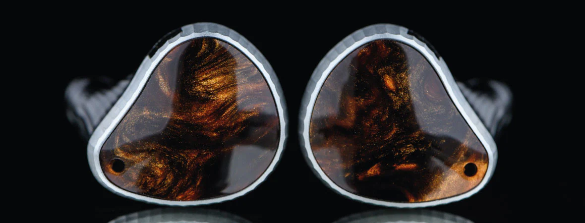
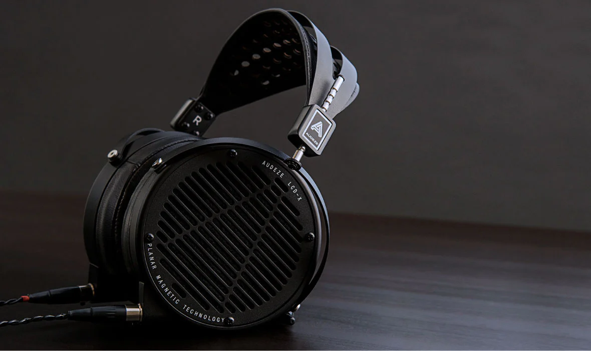
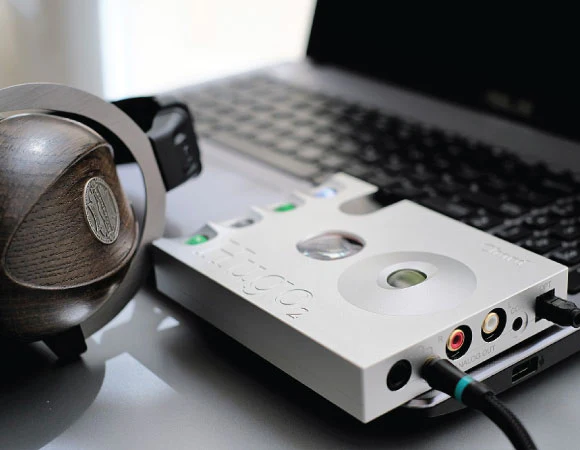
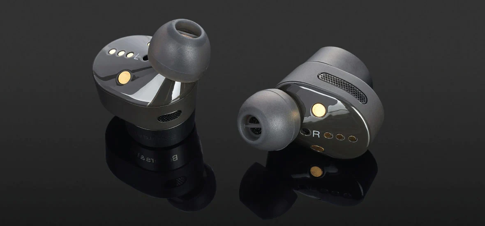
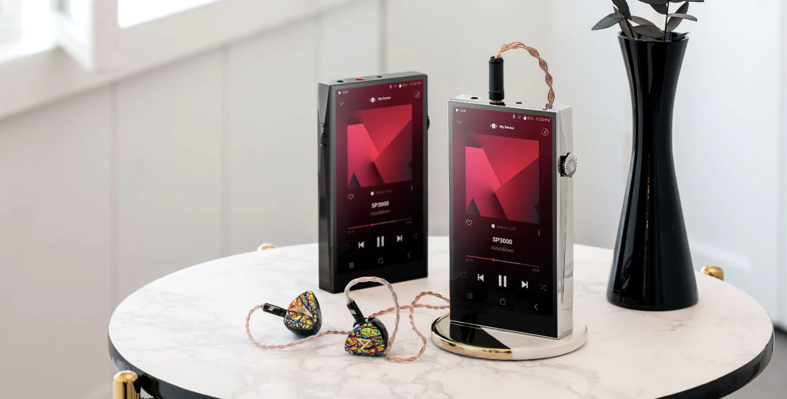
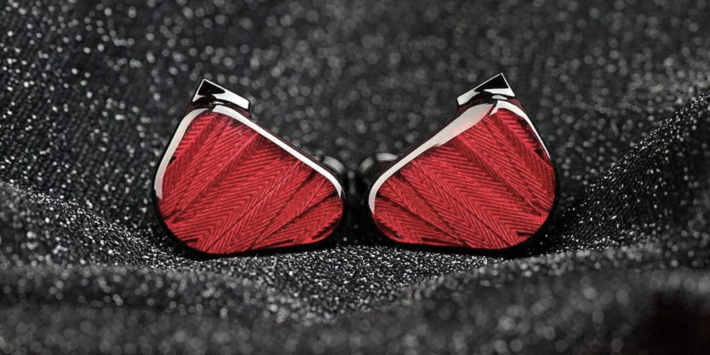
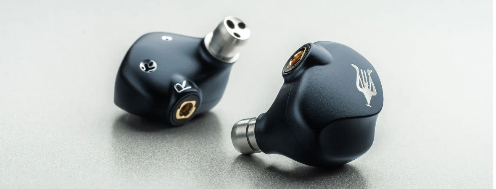

Boost your music experience
If you are a music enthusiast who wants to achieve the best sound quality possible, you have come to the right place. This webpage will provide you with comprehensive information on how to enhance your music experience with the appropriate equipment, tips, and tricks. You will learn how to differentiate between in-ear monitors and regular earphones, or between wired and wireless headphones. You will also understand what a DAC is and why you need one, or what a balanced cable is and how it works. You will discover how to select the best headphones, earphones, cables, and amplifiers for your music listening needs. You will also find out how to optimize the comfort, noise isolation, and sound quality of your music devices. Whether you are a professional musician, a mix engineer, or a music lover, this webpage will help you enjoy music more than ever before. So don’t hesitate and start enhancing your music experience today!
categories

IN EAR MONITORS
IEMs are earphones that professional musicians and mix engineers use on stage to hear themselves and their bandmates clearly and accurately. IEMs isolate the sound from the crowd and deliver high-fidelity, precise, and detailed sound of each instrument and voice.IEMs are not like regular earphones in terms of drivers, fit, comfort, and purpose. IEMs were very costly before, but now they are more budget-friendly and available for music enthusiasts.
OVER EAR HEADPHONES
Full-sized headphones deliver better sound quality, longer battery life, and more powerful and smooth sound than earbuds or on-ear headphones . Full-sized headphones offer the best noise isolation and cancellation, as they cover the entire ear and isolate the outside noise . Full-sized headphones sound more spacious and immersive, with a wider soundstage and spatial audio, especially the open-back type . Full-sized headphones are ideal for professional purposes, such as working as a DJ or in a sound studio, or for listening to music at home in a quiet environment .
DAC & AMPS
A DAC or a Digital to Analog Converter is a device that converts the digital format of music files into the analog format of sound waves that our ears and headphones can understand. The built-in DACs in smartphones and laptops are of low quality and do not reproduce the original sound wave accurately, especially for high-resolution music and headphones. A dedicated DAC can enhance the sound quality of music by extracting more details, nuances, and lifelikeness from the digital files, making the music sound more enjoyable and immersive.
WIRELESS HEADPHONES
Wired and wireless headphones or earphones have different pros and cons for listening to music and other purposes. Wireless headphones or earphones are convenient, versatile, and easy to use, but they have lower sound quality, higher cost, and shorter battery life than wired ones. Wired headphones or earphones are better for high-quality music listening, as they have higher sound quality, lower cost, and longer durability than wireless ones.
HI-RES AUDIO PLAYERS
PRODUCTS
IN EAR MONITORS
Truthear x Crinacle - ZERO
Driver Configurations 10mm+7.8mm Dynamic Driver Impedance 17.5Ω±15% (@1kHz) THD ≤1%@1KHz Sensitivity 117.5dB/Vrms (@1KHz) Frequency Response Range 20Hz-40.5kHz (IEC61094, Free Field) Effective Frequency Response Range 20Hz-20kHz (IEC60318-4, -3dB)
Meze - Rai Penta
DRIVERS Penta-Hybrid Drivers 4 X Customized Balanced Armature 1 X Dynamic Driver IMPEDANCE 20 Ω SENSITIVITY 110 DB Spl/1 MW Sensitivity FREQUENCY RESPONSE 4 Hz - 45 KHz DISTORTION Less Than 1%